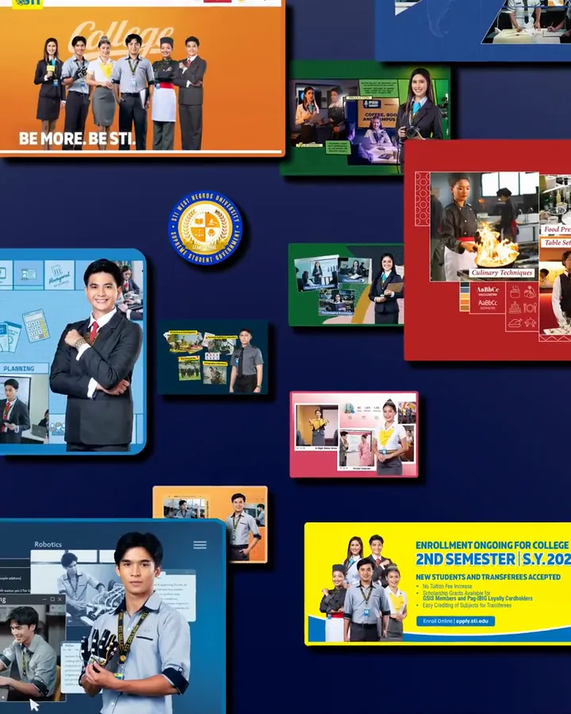
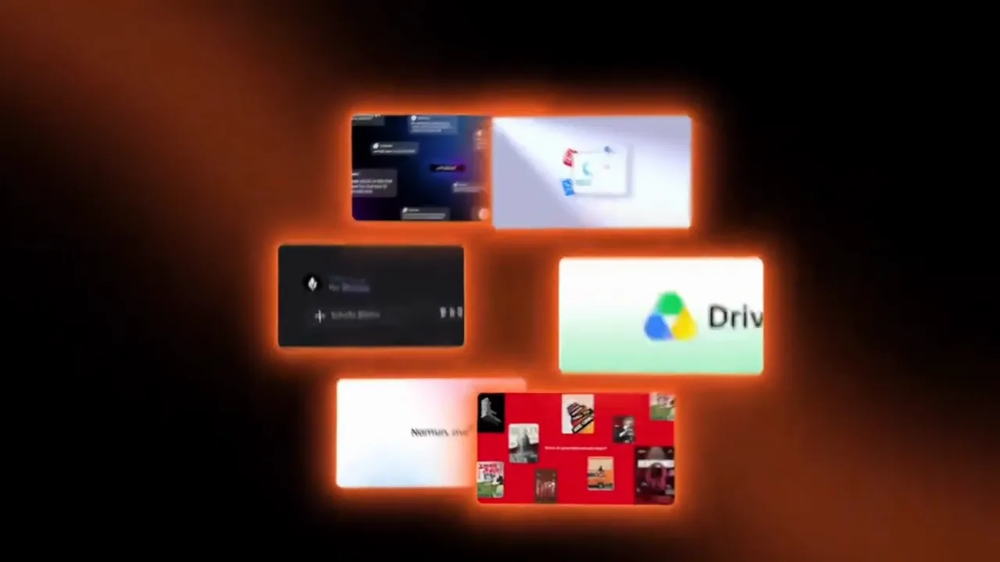
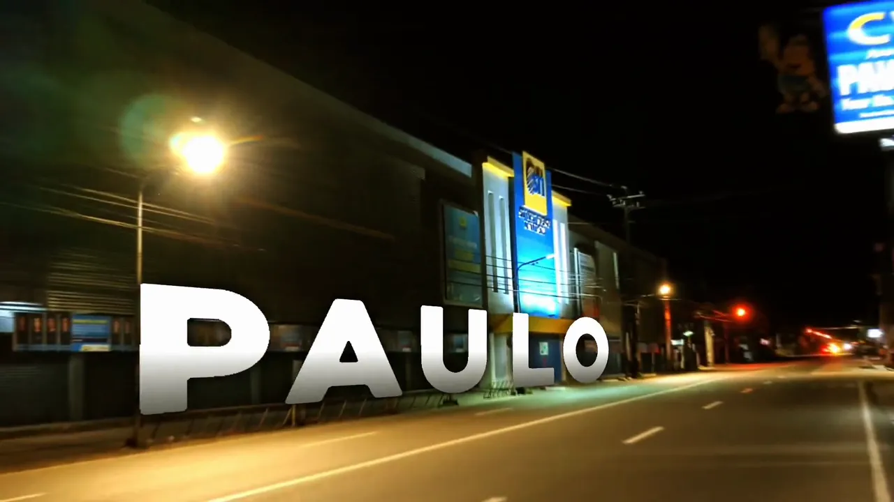

AI short-form video pipeline
From script to captioned, loudness-mastered reel, including the CICT Wildlife Month 2026 advocacy reel.
Available full-time · 40+ hrs/week
I'm Jhon Paulo Gascon, a remote creative technologist in Bacolod, Philippines. I run admin as your virtual assistant, build fast websites, edit video, automate workflows with AI, and design documents that look finished.
Jhon Paulo
Gascon
VA · Web · Motion · Automation · Docs
Available full-time
01 Services
One person, one point of contact. Hire me for a single service or a full-time mix of all five.
Inbox, calendar and admin handled across time zones, so you stay on the work only you can do.
Fast, accessible static sites and small web apps that work on a budget Android phone first.
Short-form reels, motion graphics and captioned edits paced for the feed.
Repetitive tasks turned into dependable pipelines you can run again tomorrow.
Your content, formatted and designed into reports, PDFs and decks that look finished.
02 Selected work
Open a case to see the problem, how I built it, and where to see it.
From script to captioned, loudness-mastered reel, including the CICT Wildlife Month 2026 advocacy reel.
A repeatable Python and HTML/CSS factory for Word reports, PDFs and 16:9 decks.
An Obsidian second brain, n8n automations, and Workspace / Microsoft 365 admin systems.
Hand-built static site with a spring-physics lanyard, themes and an inquiry builder.
03 Motion & video
Reels play muted as you scroll to them and pause when you move on. Tap the speaker for sound.
A mograph study with smooth keyframe curves, kinetic typography and clean brand transitions.

A high-energy campus motion edit built to hype up university events.

Rhythmic cuts, layered visuals and kinetic transitions from my editing work.

An atmospheric visual story about finding your way back, cut to mood and graded for night tones.
04 Workflows
Three pipelines I built and use. Each turns a messy starting point into a finished, repeatable output.
Before a script and raw footage After a captioned, mastered vertical reel
Before plain content After a Word report, PDF and 16:9 deck
Before scattered notes and manual admin After a linked vault and automated sheets
Toolbelt
05 About
I started in motion graphics, choreographing keyframes and type to music. That eye for pacing and detail carried into frontend code, then into automating the boring parts of my own work with Python, n8n and AI tools.
Today I put all of it to work for clients full-time: I keep admin moving as a VA, build the site, cut the reel and make the deck. I work on Windows 11 and test every page on Android, because that is the phone most people actually use.
Education
BS Information Technology (2nd-Year Coursework Completed) — STI West Negros University
Foundation in data structures and algorithms (Java), human-computer interaction and platform technologies. No class schedule, fully available for full-time work.
06 Contact
Use the builder to write your message in under a minute, or reach me directly.